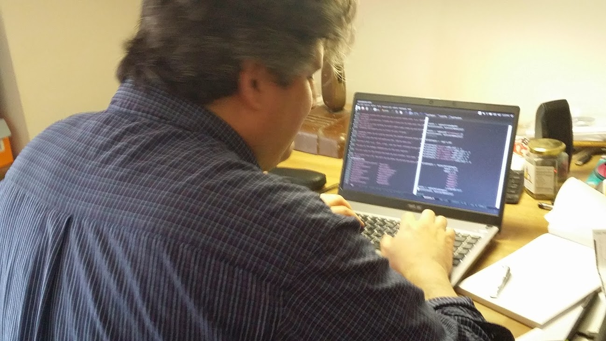

I am a fifth year PhD student in Criminal Justice at the CUNY Graduate Center. I work as a data scientist at the John Jay Research and Evaluation Center where we evaluate anti-violence programs. I serve as a CUNY John Jay Presidential Fellow where I work on the Misdemeanor Justice Project. At John Jay I am a member of the Punishment-2-Public-Health-Academy and the Social Network Research Group (SNRG-NYC). At the CUNY GC, I am a member of the Pattern Recognition Lab directed by Robert Haralick.
I mentor for the College Initiative, a project which helps people returning from prison access higher education. Additionally, I serve on the Men's Advisory Board for the Prison Visiting Project of Corrections Association of New York as well as the Research Advisory Board of NY Public Library. I am a member of the meetup groups Developers for good, NYC Open Data, NYC Python, Emacsnyc and #BetaNYC, the NYC Code for America Brigade.
Here is a link to my resume. (EM)
I am interested in prisoner reentry and economic mobility broadly.
Here is a link to my google scholar page.